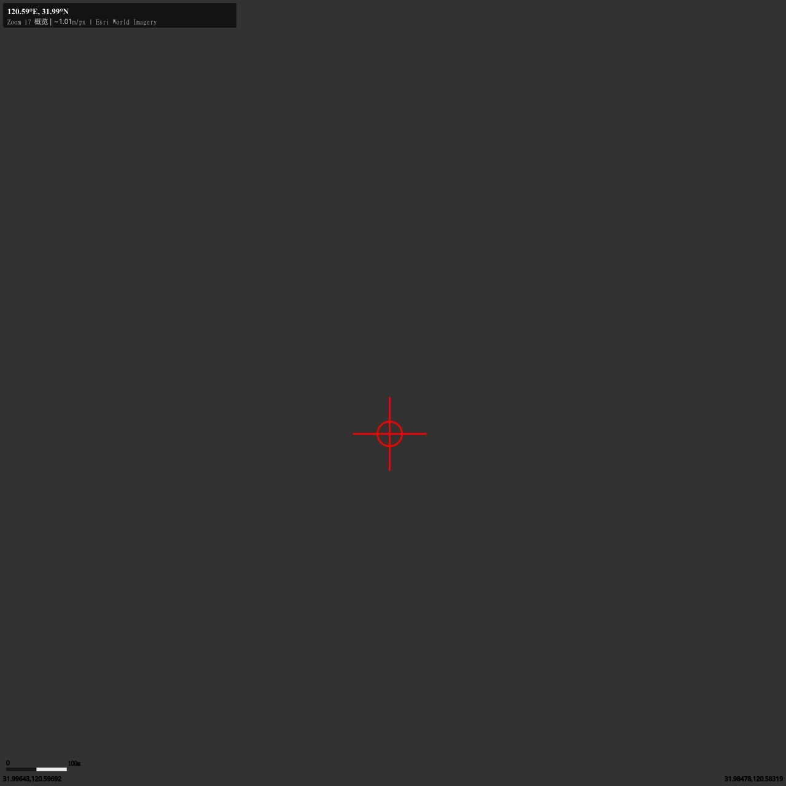
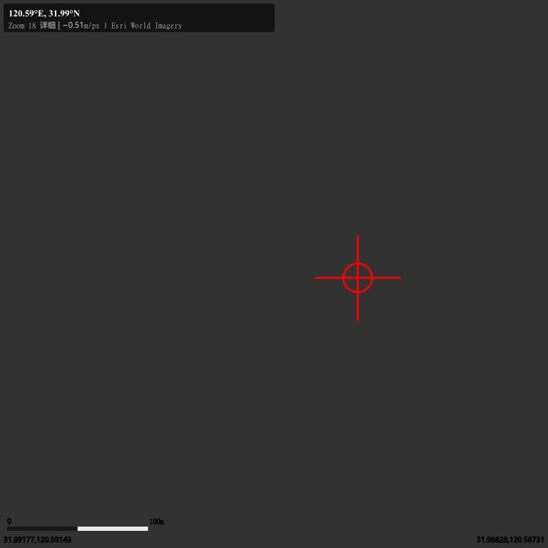
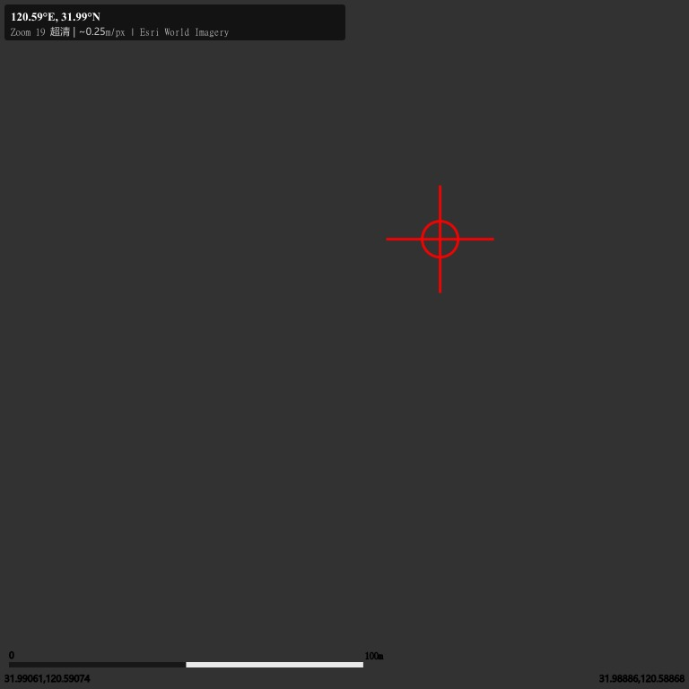

卫星地图核查视图
坐标: 120.59°E, 31.99°N — 江苏省苏州市张家港市附近
📍 目标坐标: 120.590000°E, 31.990000°N
🗺️ 数据源: Esri World Imagery (通过 ArcGIS REST API)
📐 分辨率: z=18 约 0.51m/px (满足亚米级要求)
🔴 红色十字 = 目标坐标位置
分辨率对比:
z17=~1.0m/px (概览) |
z18=~0.5m/px (详细识别) |
z19=~0.25m/px (单板识别)
z17_overview
1280x1280px | ~1.013m/px
范围: [120.58319, 120.59692] x [31.98478, 31.99643]

z18_detail
768x768px | ~0.506m/px
范围: [120.58731, 120.59143] x [31.98828, 31.99177]

z19_ultra
768x768px | ~0.253m/px
范围: [120.58868, 120.59074] x [31.98886, 31.99061]

⚠️ 说明: Esri World Imagery 为当前最新影像（非历史影像）。
430/531 新政核查需采购 2025年3-6月的历史卫星影像（吉林一号/高分多模/北京二号）。
当前图片仅演示分辨率效果 — z19 级别的 0.25m 分辨率可清晰分辨单块光伏板（约2.4㎡/块）。